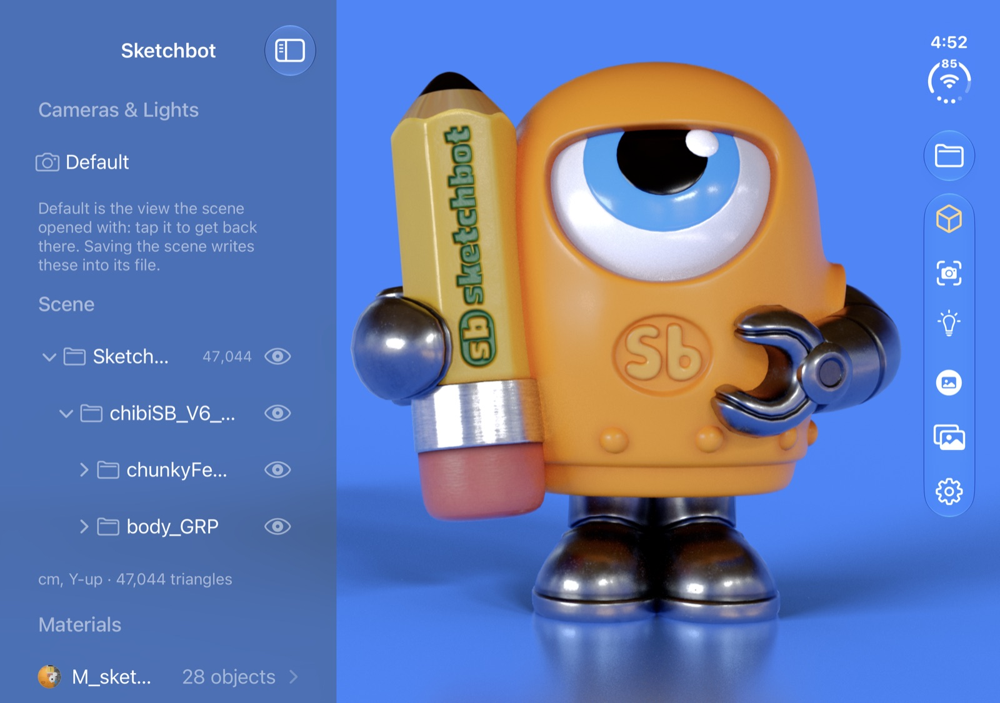
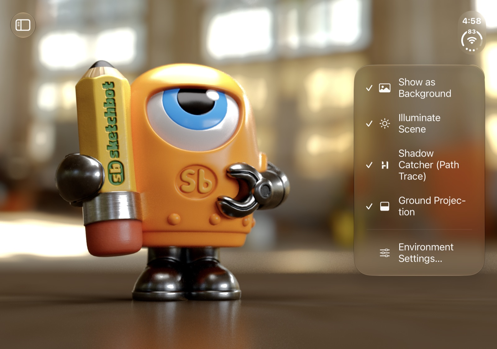
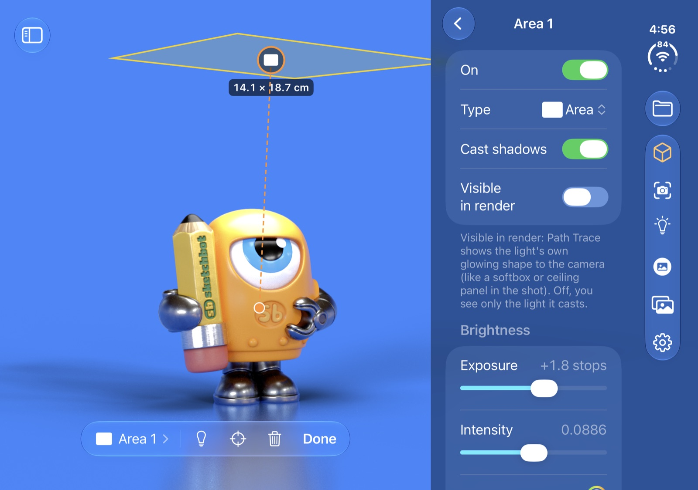
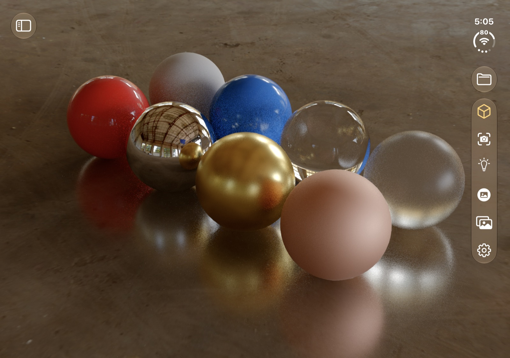
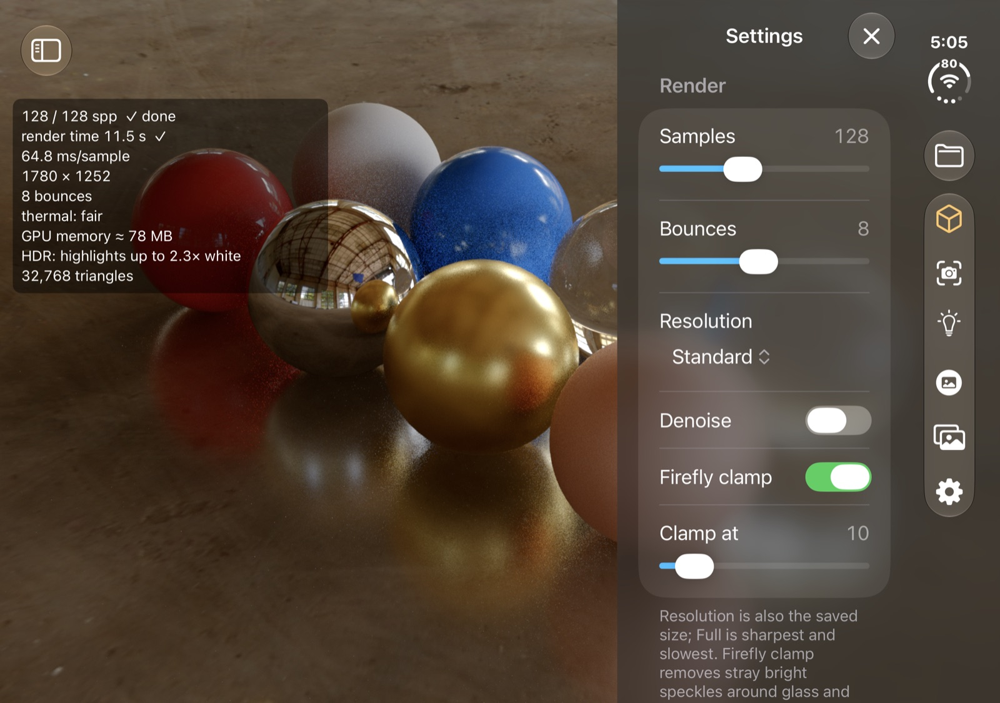
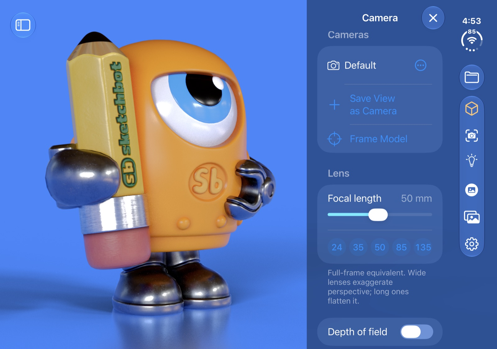
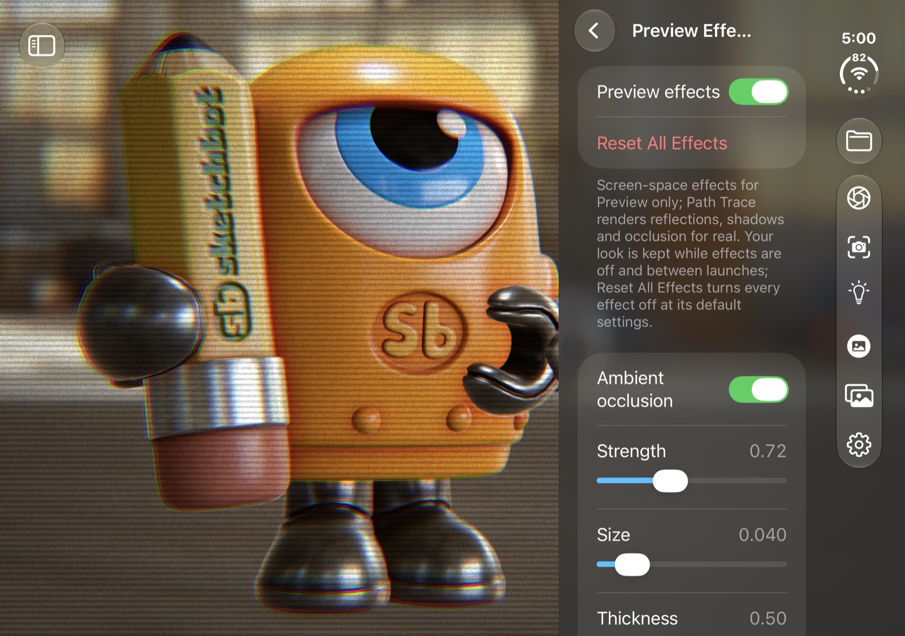
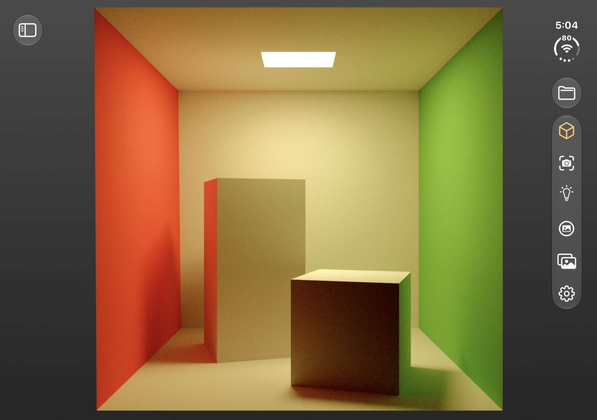
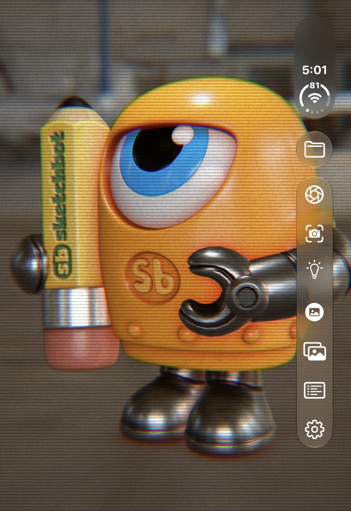
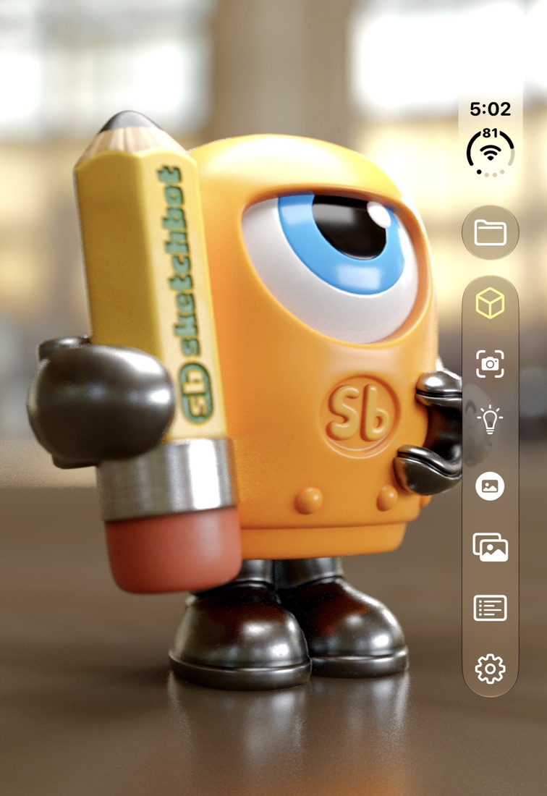

A Pocket Path Tracer
Bring your 3D models to life with real path-traced light, right on your iPhone. Open USDZ, glTF or OBJ, light it with an HDRI, and render a photoreal image in seconds.
The same kind of light simulation used by film and product-visualization renderers, running on your iPhone's hardware ray tracing.

Rendered by RAYS
Hit Render and the image comes together in front of you: soft shadows, reflections, glass and the colour bounce from every wall, refining with every sample. It's a progressive path tracer: one full light path for every pixel, every frame, until the noise is gone.
The Cornell box: computer graphics' most famous test scene, built from Cornell's published measurements.
01

02


03


04


05

Designed first for iPhone Duo
Open it up for a wide canvas with the panels beside your render. Fold it closed and the whole studio is still in one hand. And at home on every iPhone with hardware ray tracing.



One price, up front. No account, no subscription, no ads. Nothing leaves your iPhone unless you send it.